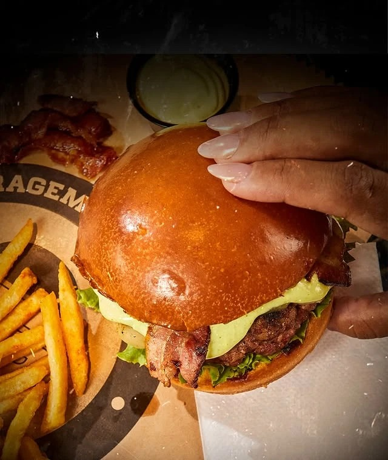
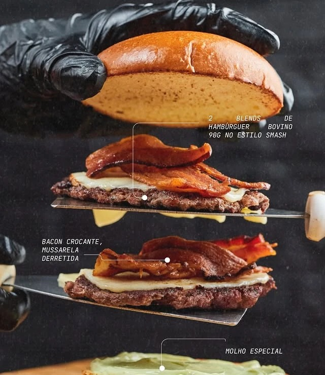
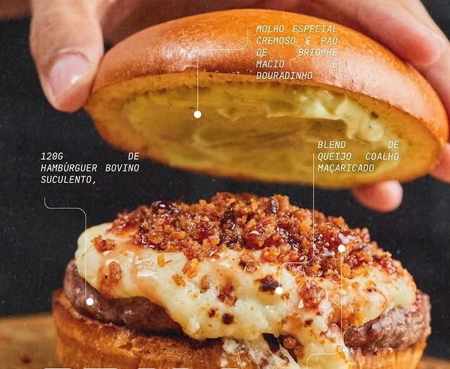
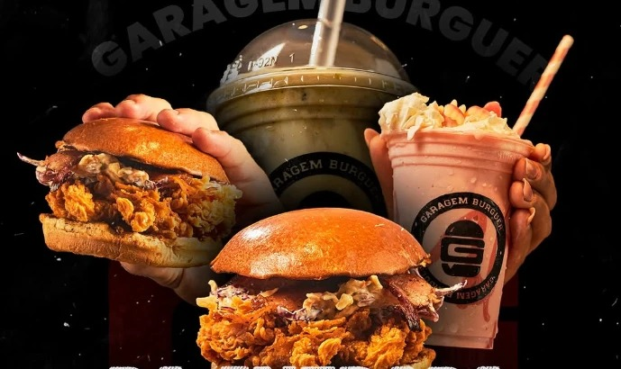
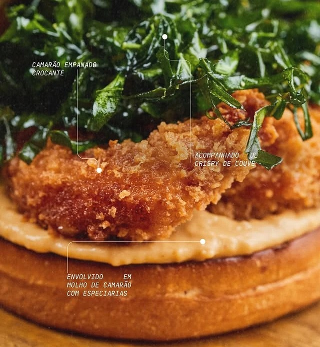

Estd.2019
A Garagem
A Garagem Burguer nasceu em 2019 no Garapu, Cabo de Santo Agostinho, com uma ideia simples: hambúrguer artesanal feito com cuidado de oficina.
[TEXTO A RECEBER: como a casa começou, quem está por trás e por que o nome Garagem.]
O que faz a diferença
Feito na casa
Blend próprio
Carne moída e moldada na casa, no ponto certo para ficar suculenta.
Pão que segura
Brioche macio e douradinho, e pão australiano no Porsche.
Molho especial
A receita da casa que aparece em quase toda a frota.
O conceito
Cada burger
é uma máquina
Na Garagem, você não pede “o de bacon com cheddar”: você pede um Maserati. Cada lanche tem nome de carro e personalidade própria. Conheça a frota:
Galeria
Por dentro da garagem
[Fotos da loja e da equipe a receber]




